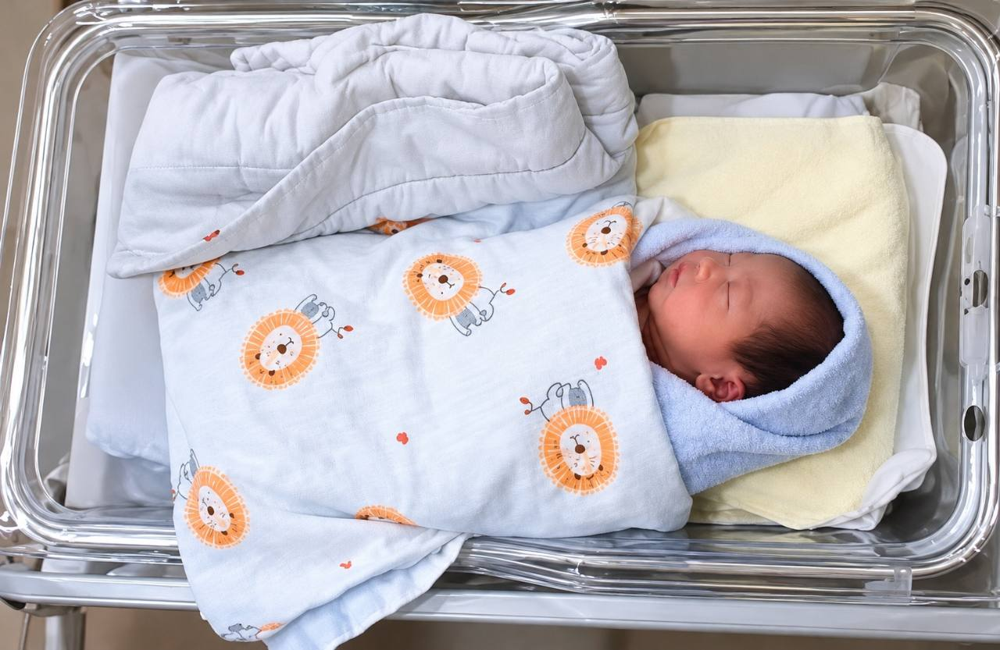

01
もっと早く聴くすべての通報を真剣に受け止める。
この子を忘れず、そして、今すぐ保護を必要とするすべての子どもを忘れずに。

写真のカイカイは静かに眠り、小さな顔には新生児の柔らかさが残っています。抱かれ、十分に食べ、安心して眠れるはずでした。泣くたびに、誰かが応えるべきでした。
成長し、学校に通い、友だちを作る機会はありませんでした。後に多くの人が彼を悼み、声を上げたことを知る機会もありませんでした。
すべての通報を真剣に受け止める。
訪問、保護措置、支援を間に合わせる。
制度を継続して検証し、改善し、応答する。
通報、訪問、保護措置、責任の検証が、苦しむ次の子どもにもっと早く届きますように。すべての子どもに、安全に育つ権利があります。